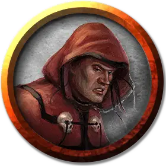

Тау
Tau
Средний Гуманоид (Человек из Шу), нейтрально-злой, именной НИП

Класс Доспеха 16 (каменный нагрудник)
Хиты 33 (6к8 + 6)
Скорость 30 футов
| мод | спас | ||
|---|---|---|---|
| СИЛ | 11 | +0 | +0 |
| ЛОВ | 14 | +2 | +2 |
| ТЕЛ | 12 | +1 | +1 |
| мод | спас | ||
|---|---|---|---|
| ИНТ | 10 | +0 | +0 |
| МДР | 13 | +1 | +1 |
| ХАР | 14 | +2 | +2 |
Навыки Обман +4, Религия +2, Убеждение +4
Чувства пассивное Восприятие 11
Языки Общий, Терран
Опасность 2 (450 опыта)
Бонус мастерства +2
Особенности
Темная преданность. Тау совершает с преимуществом спасброски от испуга и очарования.
Использование заклинаний. . Тау является заклинателем 4-го уровня. Его базовой характеристикой является Мудрость (Сл спасброска от заклинания 11, +3 к попаданию атаками заклинаниями). У него подготовлены следующие заклинания жреца:
• Заговоры (неограниченно): свет [light], священное пламя [sacred flame], чудотворство [thaumaturgy];
• 1 уровень (4 ячейки): нанесение ран [inflict wounds], приказ [command], щит веры [shield of faith];
• 2 уровень (3 ячейки): божественное оружие [spiritual weapon], удержание личности [hold person].
Действия
Мультиатака. Тау совершает две рукопашные атаки.
Каменная дубина. . Рукопашная атака оружием: +4 к попаданию, досягаемость 5 футов, одно существо. Попадание: 4 (1к4 + 2) дробящего урона.